1
Система координат в пространстве. Простейшие задачи в координатах. Скалярное произведение в пространстве.
Определение.
Декартова система координат в пространстве определяется точкой и базисом из трех векторов. Точка O называется началом координат. Прямые, проведенныечерез начало координат в направлении базисных
векторов, называются осями
координат. В трехмерном пространстве они называются осями абсцисс, ординат и аппликат. Оси
координат являются числовыми осями с началом в точке O , положительным направлением,
совпадающим с направлением соответствующего базисного вектора, и единицей
длины, равной длине этого вектора. Координатами
точки Mназываются
координаты вектора OM (радиус–вектора) (см. рис. 1). Если базис ортонормированный, то
связанная с ним декартова система координат называется прямоугольной.
Скалярным произведением двух
векторов a и b будет скаляр,
величина которого равна сумме попарного произведения координат векторов a и b.
Например для векторов a = {ax; ay; az} и b = {bx; by; bz} скалярное
произведение:
a · b = ax · bx + ay · by + az · bz
a = {1; 2; 3}
b = {4; 5; 6}
a · b = ax · bx + ay · by + az · bz
|
a · b = |
1 |
· |
4 |
+ |
2 |
· |
5 |
+ |
3 |
· |
6 |
= |
4 |
+ |
10 |
+ |
18 |
= |
32 |
|
Геометрический смысл
,
Свойства
1. Коммутативность: для любых векторов и  .
.
2. Ассоциативность:  для любого действительного чиспа и
любых векторов и
для любого действительного чиспа и
любых векторов и  .
.
3. Дистрибутивность: 

 для любых векторов ,
для любых векторов ,  и
и  .
.
4. Положительная определенность: для
любого вектора ,
причем в
том и только том случае, когда .
Пример вычисления скалярного произведения
векторов для пространственных задач
Пример 4.
Найти скалярное произведение векторов a = {1; 2; -5} и b = {4; 8; 1}.
Решение: a · b = 1 · 4 + 2 · 8 + (-5) · 1 = 4 + 16 - 5 =
15.
Примеры вычисления скалярного произведения
векторов для плоских задач
Пример 1.
Найти скалярное произведение
векторов a = {1; 2} и b = {4; 8}.
Решение: a · b = 1 · 4 + 2 · 8 =
4 + 16 = 20.
Пример 2.
Найти скалярное произведение
векторов a и b, если их длины |a| = 3, |b| = 6, а угол
между векторами равен 60˚.
Решение: a · b = |a| · |b| cos
α = 3 · 6 · cos 60˚ = 9.
Пример 3.
Найти скалярное произведение векторов p = a +
3b и q =
5a - 3 b,
если их длины |a| = 3, |b| =
2, а угол между векторами a и b равен
60˚.
Решение:
p·q=(a+3b)·(5a-3b)=5a·a-3a·b+15b·a-9b·b = 5|a|2 + 12 a · b - 9 |b|2 = 5 · 32 + 12 · 3 · 2 · cos 60˚ - 9 · 22 = 45 +36 -36 = 45.
2
Произведение векторов.
Определение.
Векторное
произведение двух векторов a = {ax; ay; az} и b = {bx; by; bz} в декартовой системе
координат - это вектор, значение которого можно вычислить, используя следующие
формулы:
|
a × b = |
i |
j |
k |
= i(aybz - azby) - j(axbz - azbx) + k(axby - aybx) |
|
ax |
ay |
az |
||
|
bx |
by |
bz |
a × b = {aybz - azby; azbx - axbz; axby - aybx}
Пример 1.
Найти векторное произведение векторов a =
{1; 2; 3} и b = {2; 1; -2}.
Решение:
|
a × b = |
i |
j |
k |
= |
|
1 |
2 |
3 |
||
|
2 |
1 |
-2 |
= i(2 ·
(-2) - 3 · 1) - j(1 · (-2) - 2 · 3)
+ k(1 · 1 - 2 · 2) =
= i(-4 -
3) - j(-2 - 6) + k(1 -
4) = -7i + 8j -
7k = {-7; 8; -3}
3
Смешанное произведение векторов.
Определение.
Смешанное произведение векторов — скалярное произведение вектора a на векторное произведение векторов b и c. (равно определителю матрицы, составленной из этих векторов)
Пример 1.
Найти смешанное произведение векторов a =
{1; 2; 3}, b = {1; 1;
1}, c = {1; 2; 1}.
Решение:
|
a · [b × с] = |
1 |
2 |
3 |
= |
|
1 |
1 |
1 |
||
|
1 |
2 |
1 |
= 1·1·1 + 1·1·2 + 1·2·3 - 1·1·3 - 1·1·2 -
1·1·2 = 1 + 2 + 6 - 3 - 2 - 2 = 2
17. Расстояние от точки до прямой.
|
d = |
|M0M1×s| |
|
|s| |
Найти расстояние между точкой M(0,
2, 3) и прямой
|
x - 3 |
= |
y - 1 |
= |
z + 1 |
|
2 |
1 |
2 |
4
Задание плоскости точкой и направляющим подпространством. Задание плоскости по
3 точкам.
Уравнения плоскости θ, заданной точкой M0 и направляющим подпространством L(a,b)
Исходные данные: Точка M0(x0,y0,z0);

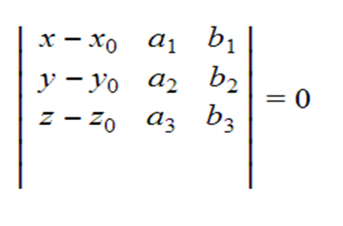
Витя сказал что правильно так
|
x-x0 |
y-y0 |
z-z0 |
|
a1 |
a2 |
a3 |
|
a1 |
b2 |
b3 |
Уравнение плоскости по
трем точкам
Есть точки M0(x0, y0, z0), M1(x1, y1, z1) и M3(x2, y2, z3) не
лежат на одной прямой, то происходящая через них плоскость представляется
уравнением
В векторном виде
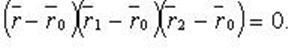
В координатах
или
5
Параметрическое уравнение плоскости
Уравнение плоскости по
точке и нормальному вектору
В векторном виде
В координатах
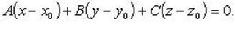
Уравнение плоскости в
отрезках
Параметрические уравнения плоскости
В векторном виде
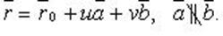
В координатах
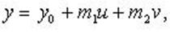
6
Общее уравнение плоскости
Каждую плоскость в пространстве можно представить как линейное уравнение, называемое общим
уравнением плоскости
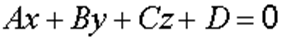 ,
(8)
где
Коэффициенты являются координатами нормального вектора плоскости  . Вектор перпендикулярен плоскости.
. Вектор перпендикулярен плоскости.
Теорема.
Всякое
уравнение вида , где A, B, C и D – некоторые действительные числа,
причем А, В и C одновременно не равны нулю, определяет
плоскость в заданной прямоугольной системе координат Oxyz в трехмерном пространстве, и всякая
плоскость в прямоугольной системе координат Oxyz в
трехмерном пространстве определяется уравнением вида при некотором наборе чисел A, B, C и D.
Возможны
следующие частные случаи:
А = 0 – плоскость
параллельна оси Ох
В = 0 – плоскость
параллельна оси Оу
С = 0 – плоскость
параллельна оси Оz
D = 0 – плоскость проходит через
начало координат
А = В = 0 – плоскость
параллельна плоскости хОу
А = С = 0 – плоскость
параллельна плоскости хОz
В = С = 0 – плоскость
параллельна плоскости yOz
А = D = 0 – плоскость проходит через ось Ох
В = D = 0 – плоскость проходит через ось Оу
С = D = 0 – плоскость проходит через ось Oz
А = В = D = 0 – плоскость совпадает с плоскостью хОу
А = С = D = 0 – плоскость совпадает с плоскостью xOz
В = С = D = 0 – плоскость совпадает с плоскостью yOz
7
Расположение плоскости в системе координат
Ax + By + Cz + D = 0
Вопрос взаимного расположения плоскостей — это
вопрос об общих для этих плоскостей.
a)
R = r = 2 система совместно т.к 2 < 3 (3 кол-во пер) т.к
2 плоскости имеет бесконечная кол-во общих точек.
A1/A2 ≠ B1/B2 ≠ C1/C2 => P1 пересек P2
b) r = R = 1 система совместная
общих точек, строки пропорциональны => n1 || n2 плоскости
совпадают
A1/A2 = B1/B2 = C1/C2 = D1/D2 ó P1 ≡ P2
c)
r < R, r = 1; R = 2 система
не совместная => решений нет => общих точек нет у плоскостей нет => n1 || n2 => P1 || P2
A1/A2 = B1/B2 = C1/C2 ≠ D1/D2 ó P1 || P2
8
Взаимное расположение двух, трех плоскостей
Двух плоскостей
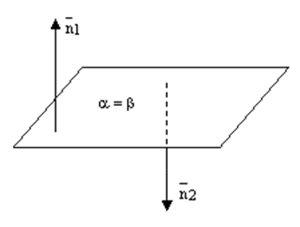
рис.3.
рис.4.
Трех плоскостей
1) Все
три плоскости совпадают: . Очевидно, что в этом случае . Ранг = 1
2) Две плоскости совпадают, а третья параллельна им, например: и в этом случае .
3) две плоскости совпадают, а третья пересекает их, например: – прямая пересечения.
В этом случае, 
рис.9.
4) Все
три плоскости параллельны друг другу: . Тогда .
5) Две плоскости параллельны, а третья пересекает их, например: . В этом случае – прямая пересечения плоскостей и , –
прямая пересечения плоскостей и и, как известно изкурса геометрии,  .
Нормальные векторы
.
Нормальные векторы  .
.
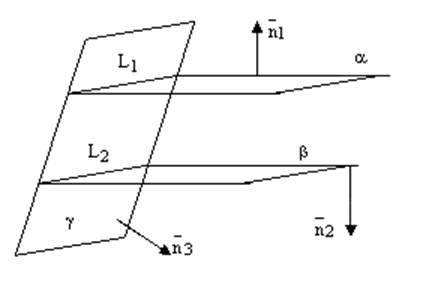
рис.10.
6) Все
три плоскости пересекаются по одной прямой и тогда , но все три вектора , и лежат
в одной плоскости.
рис.11.
7)
Каждая пара плоскостей пересекается по своей прямой, образуя треугольную
"трубу" и , но все три вектора , и лежат
в одной плоскости.
рис.12.
8) все
три плоскости пересекаются в одной точке и их нормальныевекторы некомпланарны.

9
Угол между двумя плоскостями
Определение.
Двугранный угол между
плоскостями равен углу
образованному нормальными векторами этих плоскостей.
Формула для вычисления
угла между плоскостями
Если заданы уравнения
плоскостей A1x + B1y + C1z + D1 =
0 и A2x + B2y + C2z + D2 =
0, то угол между плоскостями можно найти, используя следующую формулу
|
cos α = |
|A1·A2 + B1·B2 +
C1·C2| |
|
√A12 + B12 +
C12√A22 + B22 +
C22 |
Пример 1.
Найти угол между плоскостями 2x +
4y - 4z -
6 = 0 и 4x + 3y +
9 = 0.
Решение. Подставим в формулу вычисления угла
между плоскостями соответствующие коэффициенты:
|
cos
α = |
|2·4 + 4·3 + (-4)·0| |
= |
|8 + 12| |
= |
20 |
= |
2 |
|
√22 + 42 +
(-4)2√42 + 32 + 02 |
√36√25 |
30 |
3 |
|
Ответ: косинус угла между плоскостями
равен cos
α = |
2 |
. |
|
3 |
10
Расстояние от точки до плоскости
Расстояние
от точки до плоскости определяется через расстояние от точки до точки, одна из которых заданная точка, а другая – проекция
заданной точки на заданную плоскость.
|
d = |
|A·Mx +
B·My +
C·Mz +
D| |
|
√A2 + B2 +
C |
Пример 1.
Найти расстояние между плоскостью 2x +
4y - 4z -
6 = 0 и точкой M(0, 3, 6).
Решение. Подставим в формулу коэффициенты
плоскости и координаты точки
|
d = |
|2·0 + 4·3 + (-4)·6 - 6| |
= |
|0 + 12 - 24 - 6| |
= |
|- 18| |
= 3 |
|
√4 + 16 + 16 |
√36 |
6 |
11 Задание
прямой точкой и направляющим вектором. Задание прямой двумя точками.
Любой ненулевой вектор, параллельный данной прямой, будем называть направляющим вектором этой
прямой. Всякая прямая полностью определяется какой-нибудь своей точкой точкой А и направляющим вектором s. Действительно, через
точку А можно провести
бесконечно много различных прямых. Из этого множества прямых вектором s выделяется одна прямая, а именно та, для которой этот вектор является
направляющим. Выведем уравнение прямой,
проходящей через точку A (x ; y ) и имеющей заданный
направляющий вектор
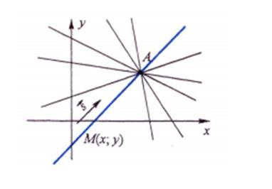
С(p ; q). Пусть М (х, у) – произвольная точка
плоскости. Тогда точка М лежит на рассматриваемой прямой в том и только том
случае, когда
векторы
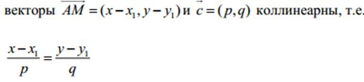
Полученное уравнение и является искомым уравнением прямой, проходящей через
данную точку
Задание прямой двумя
точками
Уравнение прямой, проходящей через две точки
A ( х1 ; у1 ) B
(х2 ;у2)
Как мы знаем, через две различные точки можно провести одну и только одну прямую.
Поэтому две
заданные точки однозначно определяют прямую и должны позволить составить уравнение
этой прямой.
Пусть даны точки A ( х1 ; у1 ) , B ( х2 ; у2 ) . Рассмотрим
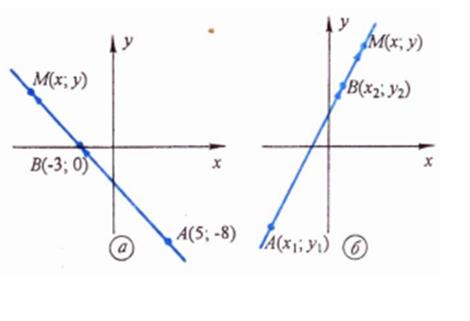
векторы AB (x2 – x1 , y2 – y1 ) и AM (x – x1 , y – y1 , ).
Тогда точка М(х, у) лежит на прямой АВ в том и
только том случае, когда векторы AB и AM коллинеарны
(параллельны), т.е. когда
12 Задание
прямой двумя пересекающимися плоскостями.
Пусть в трехмерном пространстве зафиксирована прямоугольная
система координат Oxyz и
пусть даны две пересекающиеся и несовпадающие плоскости  и . Так
как любую плоскость в прямоугольной системе координат Oxyz определяет общее
уравнение плоскостивида при
некотором наборе значений А, В, С и D,
то будем считать, что плоскостям и соответствуют уравнения 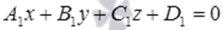 и . Тогда - нормальный
вектор плоскости , а - нормальный вектор плоскости . Эти
векторы не коллинеарны, так как плоскости и не совпадают и не параллельны. На языке
математики это условие запишется как 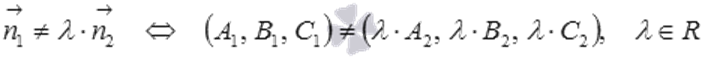 (при
необходимости смотрите статью параллельность
плоскостей). Обозначим буквой a прямую, по которой пересекаются плоскости и , то
есть, 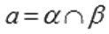.
и . Так
как любую плоскость в прямоугольной системе координат Oxyz определяет общее
уравнение плоскостивида при
некотором наборе значений А, В, С и D,
то будем считать, что плоскостям и соответствуют уравнения 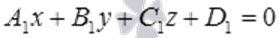 и . Тогда - нормальный
вектор плоскости , а - нормальный вектор плоскости . Эти
векторы не коллинеарны, так как плоскости и не совпадают и не параллельны. На языке
математики это условие запишется как 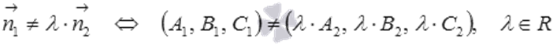 (при
необходимости смотрите статью параллельность
плоскостей). Обозначим буквой a прямую, по которой пересекаются плоскости и , то
есть, 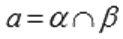.
Прямая а представляет собой множество всех
общих точек плоскостей и .
Следовательно, координаты любой точки прямой a удовлетворяют одновременно и уравнению и уравнению  , то есть, являются частным решением системы уравнений
, то есть, являются частным решением системы уравнений
Тогда общее решение системы
линейных уравнений вида определяет координаты каждой точки прямой, по которой пересекаются
плоскости и ,
а значит, определяет прямую a в прямоугольной системе координат Oxyz в пространстве.
Приведем
пример прямой в пространстве, которая задана уравнениями двух пересекающихся плоскостей.
Очевидно, что координатная прямая Ox является прямой, по которой
пересекаются координатные плоскости Oxy и Oxz.
Плоскость Oxy задается уравнением z = 0, а плоскостьOxz уравнением y = 0 (при необходимости смотрите раздел неполное общее
уравнение плоскости). Таким образом, координатная прямая Ox в прямоугольной системе координат Oxyzопределяется
системой из двух уравнений следующего вида .
13
Взаимное расположение двух прямых
Взаимное расположение двух прямых и пространстве
характеризуется следующими тремя возможностями.
1. Прямые лежат в одной
плоскости и не имеют общих точек — параллельные прямые.
2. Прямые лежат и одной
плоскости и имеют одну общую точку — прямые пересекаются.
3. В пространстве две
прямые могут быть расположены еще так, что не лежат ни в одной плоскости. Такие
прямые называются скрещивающимися (не пересекаются и не параллельны).
Возможны четыре различных случая расположения двух прямых в пространстве:
– прямые скрещивающиеся, т.е. не лежат в
одной плоскости;
– прямые пересекаются, т.е. лежат в одной
плоскости и имеют одну общую точку;
– прямые параллельные, т.е. лежат в одной
плоскости и не пересекаются;
– прямые совпадают.
14
Взаимное расположение прямой и плоскостей
Прямая может лежать на данной плоскости, быть
параллельна данной плоскости или пересекать ее в одной точке, см. следующие
рисунки.
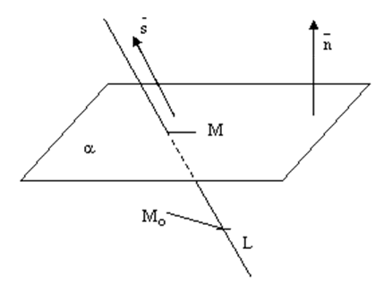
Теорема.
Пусть плоскость задана общим уравнением ,
а прямая L задана каноническими уравнениями

или параметрическими уравнениями
, ,
в которых – координаты нормального вектора плоскости , – координаты произвольной фиксированной точки прямой L,
–
координаты
направляющего вектора прямой L. Тогда:
1) если , то прямая L пересекает плоскость в
точке, координаты которой можно
найти из системы уравнений
;
(7)
2) если и  ,
то прямая лежит на плоскости;
,
то прямая лежит на плоскости;
3) если и ,
то прямая параллельна плоскости.
Доказательство. Условие говорит о том, что вектроры и не
ортогональны, а значит прямая не параллельна плоскости и не лежит в плоскости,
а значит пересекает ее в некоторой точке М. Координатыточки М удовлетворяют как
уравнению плоскости, так и уравнениям прямой, т.е. системе (7). Решаем первое уравнение системы (7) относительно неизвестной t и затем,
подставляя найденное значение t в остальные уравнения системы, находим координаты искомой точки.
Если , то это означает, что .
А такое возможно лишь тогда, когда прямая лежит на плоскости или параллельна
ей. Если прямая лежит на плоскости, то любая точка прямой является точкой
плоскости икоординаты любой точки прямой удовлетворяют
уравнению плоскости. Поэтому достаточно проверить, лежит ли на плоскости точка . Если  , то точка –
лежит на плоскости, а это означает, что и сама прямая лежит на плоскости.
, то точка –
лежит на плоскости, а это означает, что и сама прямая лежит на плоскости.
Если , а ,
то точка на прямой не лежит на плоскости, а это означает, что прямая
параллельна плоскости.
Теорема доказана.
15
Угол между прямой и плоскостью
Определение.
Угол между прямой и
плоскостью — это угол между прямой и ее проекцией на эту
плоскость.
Формула вычисления угла
между прямой и плоскостью
Если в пространстве
заданы направляющий вектор прямой L
s = {l; m; n}
и уравнение плоскости
Ax + By +
Cz +
D = 0,
то угол между этой прямой и плоскостью можно найти
используя формулу
|
sin φ = |
| A · l + B · m + C
· n | |
|
√A2 + B2 + C2 ·
√l2 + m2 + n2 |
Пример 1.
Найти угол между прямой
|
x - 4 |
= |
y + 2 |
= - |
z - 6 |
|
2 |
6 |
3 |
и плоскостью x -
2y + 3z +
4 = 0.
Решение.
Из уравнения прямой найдем направляющий
вектор прямой
s = {2; 6; -3}
Из уравнения плоскости найдем вектор
нормали плоскости
q = {1; -2; 3}
Воспользовавшись формулой, найдем угол
между прямой и плоскостью
|
sin
φ = |
| 2 · 1 + 6 · (-2) + (-3) · 3 | |
= |
|
√22 + 62 +
(-3)2 · √12 + (-2)2 + 32 |
|
sin
φ = |
| 2 - 12 - 9 | |
= |
19 |
= |
19 |
|
√4 + 36 + 9 · √1 + 4 +
9 |
√49 · √14 |
7√14 |
|
Ответ: |
|
16
Угол между двумя прямыми
Определение.
Угол между
двумя пересекающимися прямыми – это мера
меньшего из четырех углов, образованных этими прямыми.
Пример 1.
Найти угол между двумя
прямыми 3x + 4y - 7 = 0 и 4x - 3y +
8 = 0.
Решение
Воспользуемся форулой
так как уравнения прямых заданы в общем виде.
У нас A1 =
3; B1 = 4; A2 =
4; B2 = -3;
и так как деление на
нуль невозможно, то не существует. Угол , т. е. прямые перпендикулярны. Их перпендикулярность можно
было усмотреть и сразу, составив выражение A1A2 + B1B2 и
убедившись, что оно равно нулю (выполняется условие перпендикулярности двух
прямых).
17
Расстояние от точки до прямой
Определение.
Расстояние от точки до прямой — равно длине
перпендикуляра, опущенного из точки на прямую.
Формула для вычисления
расстояния от точки до прямой в пространстве
Если s = {m; n; p} - направляющий
вектор прямой l, M1(x1, y1, z1) - точка лежащей на
прямой, тогда расстояние от точки M0(x0, y0, z0) до прямой l можно найти,
используя формулу
|
d = |
|M0M1×s| |
|
|s| |
Пример 1.
Найти расстояние между точкой M(0,
2, 3) и прямой
|
x - 3 |
= |
y - 1 |
= |
z + 1 |
|
2 |
1 |
2 |
Решение.
Из уравнения прямой получим:
S{2;1;2}направляющийвекторпрямой;
M1(3; 1; -1) - точка лежащая на прямой.
Тогда
M0M1 = {3 - 0; 1 - 2; -1 - 3} = {3; -1; -4}
|
M0M1×s = |
i |
j |
k |
= |
|
3 |
-1 |
-4 |
||
|
2 |
1 |
2 |
= i ((-1)·2 - (-4)·1) - j (3·2 - (-4)·2)
+ k (3·1 -(-1)·2) = {2; -14; 5}
|
d = |
|M0M1×s| |
= |
√22 + (-14)2 +
52 |
= |
√225 |
= |
15 |
= 5 |
|
|s| |
√22 + 12 +
22 |
√9 |
3 |
Ответ: расстояние от точки до прямой равно
5.
29
Квалификация квадрик
Определение.
Квадрикой в пространстве
(или поверхностью второго порядка) называется множество всех точек
пространства, координаты которых в подходящей системе координат удовлетворяют
уравнению 2-го порядка с
тремя неизвестными, т. е.
уравнению вида a11x^2 + a22y^2 + a33z^2 + 2a12xy + 2a13xz + 2a23yz+ 2a1x + 2a2y + 2a3z + a0 = 0, где по крайней мере один из коэффициентов a11,a22,a33,a12,a13 и a23 отличен от нуля.
|
№ |
Название |
Уравнение |
|
1 |
Эллиптический цилиндр |
X^2/a^2 + y^2/bY2 = 1 |
|
2 |
Гиперболический |
X^2/a^2 + y^2/bY2 = 1 |
|
3 |
Вырожденный эл. Ц |
X^2/a^2-y^2/b^2 = 1 |
|
4 |
Мнимый |
X^2/a + y^2/b = 0 |
|
5 |
Параболический |
X^2 = 2py |
|
6 |
В виде пары пересек
плоскостей |
X^2/a^2 – y^2/b^2 = 0 |
|
7 |
|| Плоскостей |
X^a/a^2 = 1 |
|
8 |
Совпавших плоскостей |
X^2=0 |
|
9 |
Мнимых || Плоскостей |
X^a/a^2 = -1 |
|
10 |
Коническая пов |
X^2/a^2 + y^2/b^2 – z^2/c2 = 1 |
|
11 |
Эллипсоид |
X^2/a^2 + y^2/b^2 + z^2/c2 = 1 |
|
12 |
Вырожденный эллипсоид |
X^2/a^2 + y^2/b^2 + z^2/c^2 = 0 |
|
13 |
Мы эл-д |
X^2/a^2 + Y^2/b^2 + z^2/c^2=0 |
|
14 |
Однополосный гиперболоид |
X^2/a^2 + y^2/b^2 – z^2/C^2 = 1 |
|
15 |
2 ух полосный гиперболоид |
-x^2/a^2 – y^^2/b^2 + z^2/c^2 = 1 |
|
16 |
Эллиптический параболоид |
X^2/a^2 + y^2/b^2 = 2z |
|
17 |
Гиперболический параболоид |
-x^2/a^2 + y^2/b^2 = 2z |